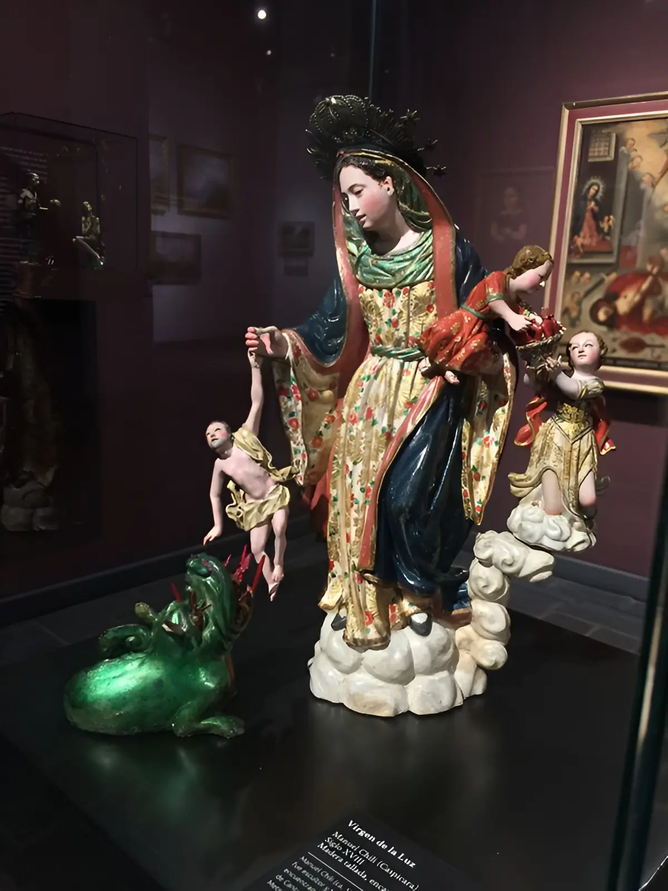
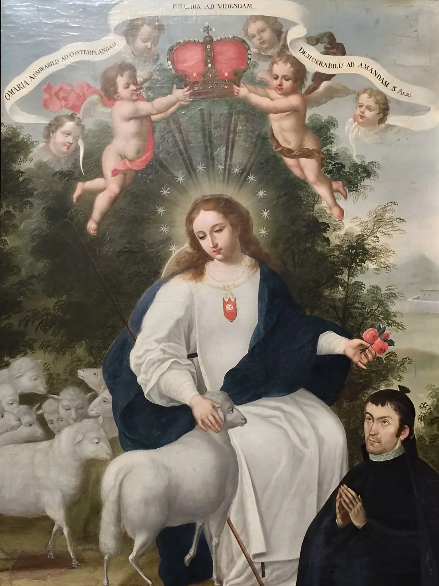
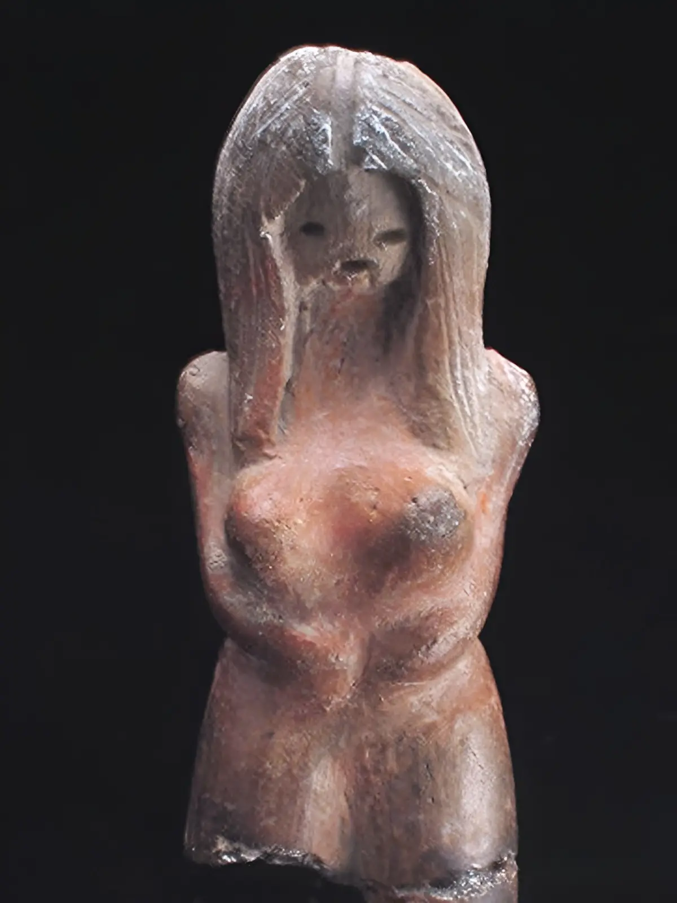

Historia del Museo
Inicios (1939-1969)
Hacia 1927, durante el gobierno del Dr. Isidro Ayora, llegó al país la misión económica estadounidense Kemmerer, la cual planteó la importancia de la creación de una banca nacional que se encargue de la política económica y monetaria del Ecuador. Como en ese tiempo se le obligaba al Estado a tener el 50 por ciento de la reserva monetaria respaldada en oro, muchas piezas de origen prehispánico fueron adquiridas por la institución. Sin embargo, hacia 1946, la labor del Dr. Julio Aráuz que se desempeñaba como químico del Banco Central del Ecuador, permitió que estos objetos se conservaran.
La entrada al Museo está ubicada al costado norte del Edificio de los espejos de la Casa de la Cultura Ecuatoriana. Este fue el origen de la primera colección del variado y rico patrimonio cultural que actualmente conserva el Museo, la que en el transcurso del tiempo se incrementó con la adquisición de valiosas colecciones privadas, entre ellas la del suizo-ecuatoriano Max Konanz en 1960, que prácticamente consolidó en la mente del Gerente General de aquella época, Guillermo Pérez Chiriboga la idea de abrir un Museo en la Institución. Esta labor fue encomendada a Hernán Crespo Toral, para entonces el único museólogo del país, que fue enviado a Francia para estudiar todo lo referente a la museología moderna de su tiempo en l’École du Louvre. En 1959 Crespo Toral vuelve de París, y el Dr. Pedro Armillas, arqueólogo español con el que había colaborado, al ver su interés y predisposición le sugirió y ayudó a conseguir una beca de la UNESCO. De regreso a Quito se presentó al Ministerio de Educación donde, como parte del compromiso de la beca, debía poner al servicio del país sus nuevos conocimientos y retribuir así lo recibido.
Primera Etapa (1970 - 1990)
Durante las décadas de 1970 a 1990, el Museo Nacional se convirtió en el eje dinamizador de la cultura y la educación patrimonial en el país. En 1973, Hernán Crespo conformó la Comisión regional en Guayaquil del Patrimonio Artístico Nacional y en 1974, Olaf Holm ingresó al Banco Central del Ecuador como Director-Asesor Técnico del Museo Antropológico en esa ciudad. Allí formó la comisión de adquisiciones con Enrique Tábara y Yela Loffredo de Klein y comenzó a realizar millonarias compras de lotes de piezas precerámicas, cerámicas y metalúrgicas. En 1978 se conformó el Centro de Investigación y Cultura, lo que dio paso a la creación del Museo del Banco Central de la ciudad de Cuenca en 1980. De ese modo se fue consolidando la importante labor que la institución bancaria estaba desarrollando por la cultura y el patrimonio nacionales, ya que de lo contrario en aquellos años no había otro organismo capaz de hacerlo.
Segunda Etapa (1990-2010)
Una serie de acontecimientos políticos y económicos del país afectaron la continua labor del museo hasta cerrar sus puertas en 1991. En 1992, con el propósito de brindar al público espacios más amplios de exposición, las autoridades del Banco Central del Ecuador resolvieron trasladar sus instalaciones hacia un nuevo y amplio local en el edificio de la Casa de la Cultura Ecuatoriana. El nuevo Museo Nacional del Banco Central del Ecuador se inauguró en 1995 bajo la presidencia del arquitecto Sixto Durán Ballén. En esta etapa, el museo contó con las salas de arqueología, oro, arte colonial, arte decimonónico, arte contemporáneo y una sala dedicada al mueble colonial y republicano.
Tercera Etapa (Del 2010 en adelante)
Bajo la presidencia del economista Rafael Correa Delgado, el 15 de enero de 2007 se creó el Ministerio de Cultura con el propósito de que se encargue de las funciones que antes correspondían a la Subsecretaría de Cultura. De esa manera se inició una profunda transformación de las políticas públicas relacionadas con la cultura del país. El presidente del directorio del Banco Central, Diego Borja, hizo la entrega simbólica a la ministra de Cultura de aquel entonces, Érika Sylva, de la administración de 18 museos, 7 bibliotecas y un archivo fotográfico, entre otros bienes.